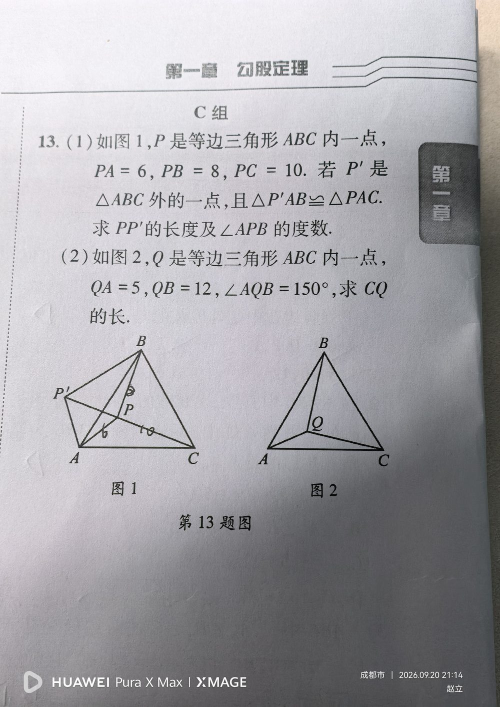

【第(1)问】① 等边三角形 ABC；② P 是三角形内一点；③ PA = 6、PB = 8、PC = 10；④ P' 在 △ABC 外部，且 △P'AB ≌ △PAC。 【第(2)问】① 等边三角形 ABC；② Q 是三角形内一点；③ QA = 5、QB = 12；④ ∠AQB = 150°。 （两问都给了「等边三角形 + 内部一点 + 到顶点距离」，是同一个模型的两种问法。）
【第(1)问】求 PP' 的长度 与 ∠APB 的度数； 【第(2)问】求 CQ 的长。
【第(1)问】 ① 观察全等：△P'AB ≌ △PAC，相当于把 △PAC 绕点 A 旋转 60°（因为等边三角形 ∠BAC = 60°）得到 △P'AB； ② 由全等得对应边相等：AP' = AP = 6，P'B = PC = 10，且 ∠P'AB = ∠PAC； ③ ∵ ∠BAC = 60°，∴ ∠P'AP = ∠P'AB + ∠BAP = ∠PAC + ∠BAP = ∠BAC = 60°； ④ 又 AP' = AP = 6 ⇒ △P'AP 是等边三角形 ⇒ PP' = 6（同时 ∠APP' = 60°）； ⑤ 在 △P'PB 中：P'P = 6、PB = 8、P'B = 10，而 6² + 8² = 100 = 10² ⇒ ∠P'PB = 90°； ⑥ ∠APB = ∠APP' + ∠P'PB = 60° + 90° = 150°。 【第(2)问】同源解法（旋转 60°）： ① 把 △QAC 绕点 A 顺时针旋转 60°，落到 △Q'AB 的位置（Q' 在 △ABC 外）； ② ⇒ AQ' = AQ = 5，且 ∠Q'AQ = 60° ⇒ △Q'AQ 是等边三角形 ⇒ QQ' = 5、∠AQQ' = 60°； ③ ∵ ∠AQB = 150° ⇒ ∠Q'QB = ∠AQB − ∠AQQ' = 150° − 60° = 90°； ④ 在 Rt△Q'QB 中：Q'B² = QQ'² + QB² = 5² + 12² = 25 + 144 = 169 ⇒ Q'B = 13； ⑤ 由旋转全等 △Q'AB ≌ △QAC ⇒ Q'B = QC ⇒ CQ = 13。
① 看不出「全等 = 绕顶点旋转 60°」，找不到 PP' / QQ' 这条关键辅助线； ② 忘记先证 △P'AP（△Q'AQ）是等边三角形 —— 必须同时用「两边相等」和「夹角 60°」两个条件； ③ 全等对应关系搞错：△P'AB ≌ △PAC 中对应关系是 AP'↔AP、AB↔AC、P'B↔PC，写错就全盘皆错； ④ 第(2)问里 ∠Q'QB = 90° 的推导漏掉（要用 150° − 60°，其中 60° 来自等边三角形）； ⑤ 数字 6、8、10 与 5、12、13 都是勾股数，看到就要立刻想到「直角三角形」； ⑥ 第(1)问漏答一问（题目要 PP' 和 ∠APB 两个答案）。
① 等边三角形的性质：三边相等、三个角都是 60°，以及「旋转 60° 不变」的思想； ② 旋转型全等（手拉手模型）：公共顶点、等长旋转边、夹角相等 ⇒ 全等； ③ 勾股定理的逆定理：6² + 8² = 10²、5² + 12² = 13² ⇒ 直角三角形； ④ 图形变换（旋转）把分散的条件集中到一个三角形中的解题思想； ⑤ 常见勾股数：3-4-5、5-12-13、6-8-10、8-15-17。